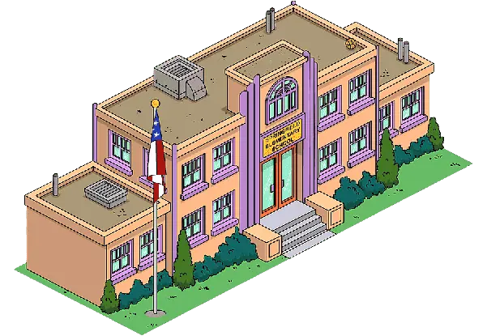
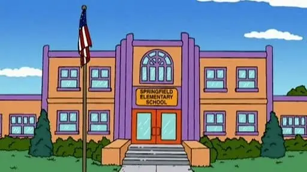
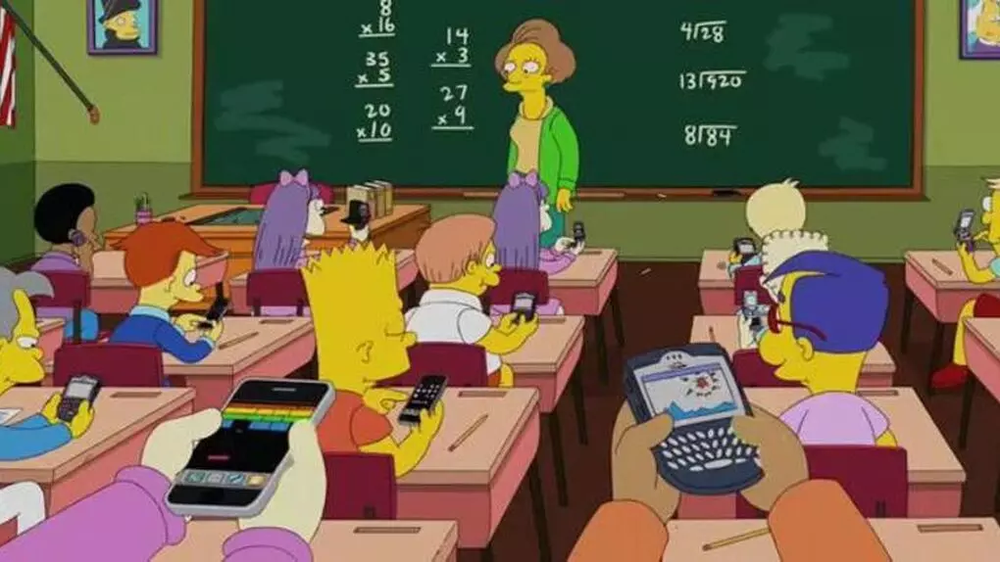
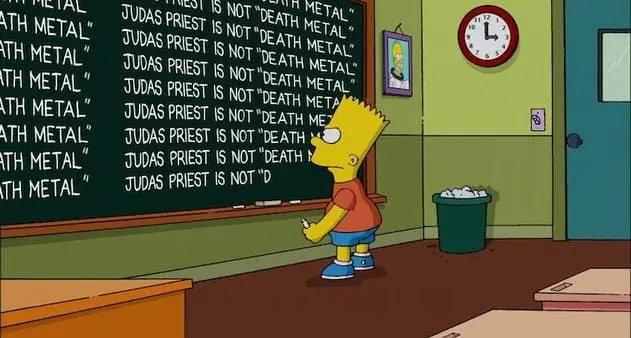

La escuela primaria de Springfield se caracteriza por la gran calidad de la enseñanza impartida por los profesores, los cuales, por lo general, asisten animados a clase y se preocupan de si los alumnos están aprendiendo. Con frecuencia envían a los alumnos que se comportan mal al despacho del director Skinner para que este les imparta algún castigo. Segun el Superintendente Chalmers, esta escuela era la más derruida de Misuri y que por eso la habían desarmado ladrillo a ladrillo y trasladado a Springfield. Tambien se dice que la escuela tenia varias ventanas rotas, no tenia salón de ordenadores, y en el patio casi no habia juegos y los pocos que habia eran peligrosos. Se señaló que la escuela está forrada en asbesto, un compuesto químico altamente tóxico. Gracias a las buenas notas del alumnad, esta recibe muchos subsidios a lo largo del año.
Información del Centro
Esta escuela tiene un aspecto cuadriculado donde tanto el interior como el exterior esta formado de manera que se pueda aprovechar el poco espacio que se le permite tener en un pequeño terreno. La fachada esta compuesta por colores amarillos y morados, con un cartel en la puerta principal, con una bandera y muchos setos a su alrededor, y el interior esta formado por pasillos con colores verdosos en las paredes, rojo oscuro en el suelo y gris en el techo. Casi todas las aulas son iguales pese a sus cambios de color o posicion de los asientos, esto ultimo comparando la clase de fisica y quimica y la de musica. Esta compuesto tambien con una sala de profesores, gimnasio que se usa mas para eventos que otra cosa y tiene una pequeña caseta donde vive Willie el de mantenimiento.




Informe de daños
Aunque no nos esta permitido, hemos preferido advertir a toda aquella familia que este dispuesta a apuntar a sus niños a este colegio de las posibles malas influencias que hay por aqui. Podran ver que son muy pocos pero, estos niños son capaces de derrumbar el edificio con solo media hora que tienen de recreo ¡Cuidado con ellos, sobretodo con el primero, no es conveniente acercarse a el ni a su familia, mucho menos a su padre que es el culpable de todas estas catastrofes que ocurren aqui!
Alumno
Nivel de Daños
Bart Simpson
¡Alerta Roja!
Nelson Muntz
Muy Grave
Jimbo Jones
Grave
Kearney Zzyzwicz
Grave
Dolph Starbeam
Grave
Milhouse Van Houte
Insignificante
Lo volvere a repetir, por si no les queda claro, aunque no nos esta permitido porque puede quitarle dinero y alumnos al centro, hemos preferido advertir a toda aquellas familia que esten dispuesta a matricular a sus niños en este centro de las posibles malas influencias que hay por aqui. Podran ver que son muy pocos pero, estos niños son capaces de derrumbar el edificio con solo media hora que tienen de recreo ¡Cuidado con ellos, sobretodo con el primero, llamado BART SIMPSON, no es conveniente acercarse ni a el ni a su familia, mucho menos a su padre, HOMER SIMPSON, quien es el culpable de todas las catastrofes que ocurren aqui y en la ciudad!